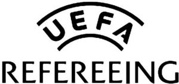

Trade Mark Journal No.2025/010 7 March 2025
WO0000001839946 (16,25,26)
Office of origin: Switzerland
Date of International Registration:20 September 2024
Date of designation in the UK:
20 September 2024

International priority date claimed: 19 August 2024
(Switzerland)
- Class 16
- Coloring and drawing books; activity books; magazines; newspapers; books and journals, including those concerning sportsmen, sportswomen or sports events; bookmarkers; printed teaching material; score sheets; event programs; albums for events; photograph albums; autograph books; printed timetables; pamphlets; collectible photographs of players; bumper stickers, stickers, albums, sticker albums; posters; photographs; tablecloths of paper; towels of paper; bags of paper; invitation cards; greeting cards; gift wrapping paper; coasters and place mats of paper; garbage bags of paper or of plastics; food wrapping paper; small bags for preserving foodstuffs; paper coffee filters; labels (not of textile); hand towels of paper; wet hand-wipes of paper; toilet paper; tissues of paper for removing make-up; paper and cardboard boxes for pocket handkerchiefs; handkerchiefs of paper; stationery and instructional and teaching material (except apparatus); typewriter paper; copying paper; envelopes; notepads; folders for papers; tissue paper; writing books; paper sheets for note-taking; writing paper; binder paper; files; covering paper; luminous paper; adhesive paper for notes; paperweights; crêpe paper; tissue paper sheets (stationery); badges or insignia of paper; flags of paper; bunting of paper; writing instruments; fountain pens; pencils; ballpoint pens; ballpoint pen and pencil sets; felt-tip pens (marking pens); pencils and felt-tip pens; marking pens; writing ink, ink for pens; ink pads, rubber stamps; typewriters (electric or non-electric); lithograph prints, lithographic works of art; paintings (pictures), framed or unframed; paint boxes, paint sets and color pencils; chalks; pencil ornaments [stationery]; printing blocks; address books; diaries (planners); personal organizers of paper; road maps; tickets, entry tickets; bank/travel checks; comic books; calendars; postcards; advertising boards, banners and material included in this class; transfers (decalcomanias); sticking labels; office requisites (except furniture); correction fluids; rubber erasers; pencil sharpeners; stands for pens and pencils; paper clips; thumbtacks; drawing rulers; adhesive tapes for stationery purposes, adhesive tape dispensers; staples; stencils; document holders (stationery); paper clips; holders for notepads; bookends; stamps (seals); postage stamps, foreign postage stamps, collectible postage stamps, postage stamps for collectors; commemorative stamp sheets; credit cards, telephone cards, ATM cards, cards for traveling and for shows, check guarantee cards and debit cards, non-magnetic, and of paper or cardboard; baggage tags of paper; passport cases; travelers' checks; holders for checkbooks; money clips of metal; letter trays.
- Class 25
- Clothing; shoes and footwear; headwear; shirts; knitwear (clothing); pullovers; slipovers; T-shirts; vests; jerseys; sleeveless jerseys, dresses; skirts; underwear, functional underwear, brassieres; swimsuits; bathrobes; shorts; trousers; sweaters; stocking caps; caps; hats; long scarves; scarves, shawls; peaked caps; tracksuits; sweatshirts; jackets, sports jackets, stadium jackets (jumpers); blazers; waterproof clothing; coats; uniforms; neckties; wrist bands; headbands; gloves; aprons; bibs (not of paper); pajamas; play suits for infants and children; socks and stockings; tights and leggings, garters; belts; suspenders; sandals; sports shoes, namely, shoes for outdoor sports, basketball shoes, multi-sport shoes, cycling shoes, indoor sports shoes, track and field shoes, football shoes (indoor and outdoor), canvas shoes, tennis shoes, sneakers, sailing shoes, shoes for aerobics; hiking boots; flip-flops; sportswear, namely, fleece tops, jogging suits, knitted sportswear, casual sports pants, polo shirts, sweat shirts, sweat pants football shirts, rugby shirts, bathing suits, sports jerseys, leotards, ski suits, ski jackets, ski trousers; wrist bands [clothing].
- Class 26
- Braids; tassels (haberdashery); ribbons; buttons; sewing needles; sewing boxes; badges for clothing (other than of precious metal); brooches (clothing accessories); decorative pins and needles not of precious metal; ornament pins for hats not of precious metal; hair nets, hair bands; barrettes (hair slides); hair pins; hair ribbons; pins not of precious metal; edging cords; bands for clothing (strips); competitors' numbers for advertising use; shoe ornaments not of precious metal; hair ornaments in this class; badges of all kinds not of precious metal (including numbers and letters); plastic badges; badges and insignia not of precious metal.
Union des Associations Européennes de Football (UEFA)
Representative: Stobbs, Building 1000,, Cambridge Research Park, Cambridge CB25 9PD, UNITED KINGDOM